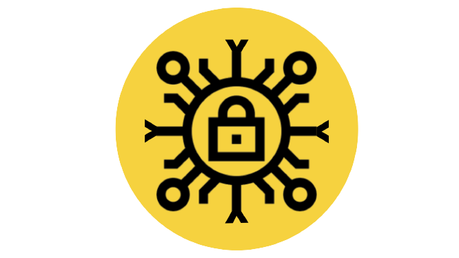

PETIR
Learn moreAbout
We are a well-versed shadow community of competitive students under the Cyber security Program in BINUS University
What we do, in essence:
- We strive for competitive achievements in every Cyber Security domain.
- We collaborate with institutions to produce well-designed CTF challenges.
- We encompass a hive-minded culture: new knowledge for one is new knowledge for all.
Streams in Petir Cyber Security
Capture the Flag (CTF) in cybersecurity is a type of competition where participants engage in various challenges related to computer security. These competitions simulate real-world security scenarios and require participants to use their knowledge and skills to solve problems, exploit vulnerabilities, and capture "flags"—hidden pieces of data that serve as proof of a successful exploit or solution.
There are 6 streamings in PETIR: Web Exploitation, Binary Exploitation, Reverse Engineering, Forensics, Cryptography and Blockchain.
Web Exploitation

Web exploitation revolves around identifying and exploiting security weaknesses in web applications. This often involves manipulating input fields to cause unintended behavior, such as using SQL Injection to gain unauthorized access to databases, or Cross-Site Scripting (XSS) to inject malicious scripts into web pages viewed by other users. Techniques like Cross-Site Request Forgery (CSRF) can trick users into performing actions they did not intend, while Command Injection allows for the execution of arbitrary commands on a server. Mastery in this area requires a solid understanding of web technologies, including how web servers, browsers, and application frameworks interact, as well as proficiency in programming languages commonly used in web development like JavaScript, PHP, and Python.
Binary Exploitation
Binary exploitation involves finding and taking advantage of vulnerabilities in compiled programs to execute arbitrary code or gain unauthorized access. Common techniques include Buffer Overflow, where attackers overwrite a program’s memory to alter its execution flow, and Format String Vulnerabilities, which involve manipulating format specifiers to access or modify memory. Return-Oriented Programming (ROP) is another advanced technique where attackers use existing code snippets within a program's memory to execute malicious payloads. This stream requires a deep understanding of low-level programming concepts, assembly language, and security mechanisms like stack canaries and Address Space Layout Randomization (ASLR), alongside experience with tools for analyzing and manipulating binaries.
Reverse Engineering
Reverse engineering focuses on deconstructing compiled software to understand its functionality or discover vulnerabilities. This process often involves disassembly, where binary code is translated into assembly language to analyze the program’s behavior. Debugging tools allow for stepping through code execution to inspect and manipulate program states, while decompilation tools convert binary code into higher-level programming languages for easier comprehension. Success in this area requires familiarity with assembly language, debugging tools such as GDB, and decompilation tools like IDA Pro or Ghidra, as well as a keen ability to understand and reconstruct the logic of compiled applications.
Cryptography
Cryptography deals with the principles and practices of secure communication and data protection. In CTF challenges, this often means breaking cryptographic algorithms or protocols by finding weaknesses in their design or implementation. Cryptanalysis involves applying mathematical techniques to decipher encrypted messages or undermine cryptographic methods. Participants might also face tasks related to implementing secure cryptographic systems correctly. This stream demands a strong grasp of cryptographic theories and algorithms, such as AES and RSA, and a thorough understanding of how these methods are applied to protect data in various contexts.
Forensics
Forensics involves the investigation and analysis of digital evidence to uncover and understand what happened in a given scenario. In Capture the Flag (CTF) challenges, forensics tasks often require participants to examine and interpret data from various sources, such as disk images, memory dumps, and log files. The goal is to reconstruct events, identify malicious activity, and extract hidden or deleted information.
Blockchain
Blockchain in Capture the Flag (CTF) challenges involves the exploration and analysis of decentralized ledger technologies to uncover hidden information and solve complex problems. Participants are often tasked with examining blockchain transactions, smart contracts, and cryptographic signatures to understand and exploit vulnerabilities or extract specific data. The goal is to simulate real-world scenarios where blockchain security is tested, helping participants develop skills in identifying weaknesses, verifying the integrity of transactions, and ensuring the robustness of blockchain implementations.
Achievements
Competitions
| Competition | Year | Rank |
|---|---|---|
| WRECK-IT 4.0 | April 2023, Politeknik SSN | 3rd Place |
| Find-IT CTF | May 2023 | 2nd Place |
| Joints UGM CTF | May 2023 | 1st Place |
| Blackhat MEA | 2022 | 12th World Rank |
| CodeGate CTF Korea | 2023 | 6th World Junior Rank |
| and 11 more competitions (winning all of them) | ||

Conferences
Blackhat
Participations in Blackhat Asia & Middle East - Africa (2020 - 2024)